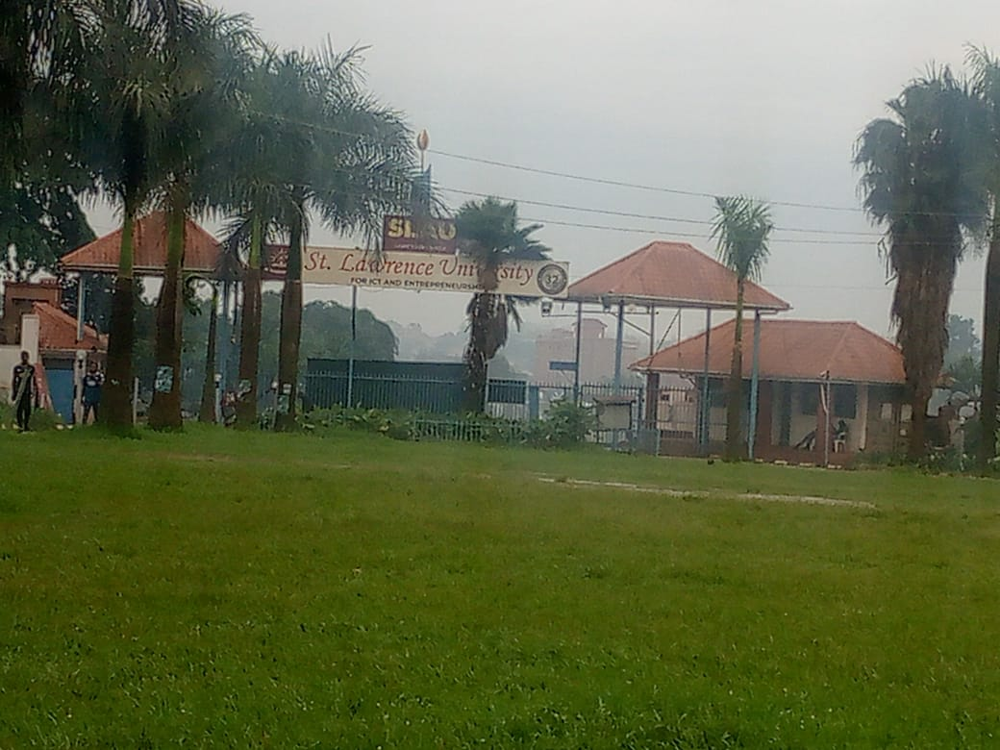

About St. Lawrence University
Two decades of transforming lives through quality education in the heart of Kampala
Our History
St. Lawrence University was founded in 2006 with a clear vision: to provide affordable, quality, and transformative higher education in Uganda. Established as a private university in the heart of Kampala, we have grown from a small institution into one of the country's most respected centers of learning.
Over the past two decades, we have expanded our academic offerings, built modern facilities, and graduated thousands of students who are now leading in their respective fields across Uganda and the East African region. Our commitment to accessibility has made us a beacon for students from all backgrounds who seek excellence in education.
Our Commitment
We are committed to nurturing intellectual curiosity, fostering critical thinking, and developing the moral character of our students. Our approach to education goes beyond the classroom — we believe in shaping well-rounded individuals who are prepared to contribute meaningfully to society.
As a private university, we maintain the flexibility to innovate in our teaching methods, curriculum design, and student support services. This agility has allowed us to stay at the forefront of educational trends while maintaining our core values of integrity, excellence, and service.

Our Mission
To provide affordable and quality higher education that transforms lives through academic excellence, character development, and community engagement, empowering graduates to become responsible leaders and change-makers in Uganda and beyond.
Our Vision
To be a leading private university in East Africa, recognized for producing innovative, ethical, and socially responsible graduates who drive sustainable development and positive transformation in their communities and the world.
Our Core Values
Excellence
We strive for the highest standards in teaching, research, and service in everything we do.
Integrity
We uphold honesty, transparency, and ethical conduct in all our interactions and decisions.
Inclusivity
We welcome students from diverse backgrounds and create an environment where everyone can thrive.
Innovation
We embrace creativity and new ideas to enhance learning and stay relevant in a changing world.
At a Glance
Leadership
University Chancellor
Provides strategic oversight and governance, ensuring the university remains true to its mission and values while guiding its long-term direction.
Vice Chancellor
Leads the day-to-day administration of the university, driving academic excellence, operational efficiency, and institutional growth.
Deans & Faculty Leaders
Experienced academics who lead our faculties, ensuring high-quality program delivery and continuous curriculum improvement.